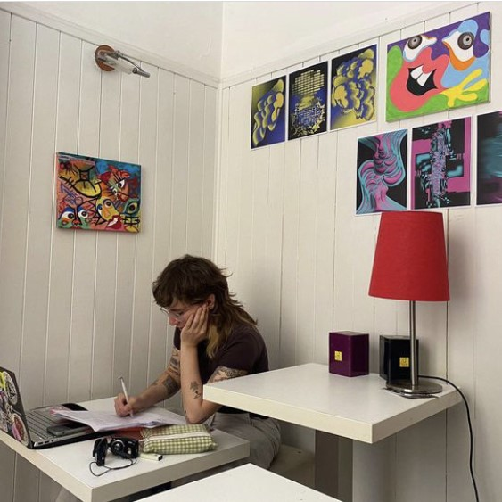

"Culture is the arts elevated to a set of beliefs."
— Thomas Wolfe
Alice Picco · Corrado Consiglio · Salvatore Di Marzo
The Concept
Utilizing a blend of open datasets, this project offers a comprehensive overview of habits, preferences, and regional disparities in cultural engagement across Italy.
Through interactive visualizations we aim to make complex data accessible and engaging, fostering a deeper understanding of Italy's cultural landscape — and contributing empirical evidence to inform policymakers in the cultural sector.
Objectives
Gathered data from national statistics agencies, cultural institutions, publishing houses, and digital platforms.
Cleaned and preprocessed all datasets to ensure accuracy and consistency across sources.
Designed and developed interactive charts and maps suited to each dataset's structure.
Built a narrative from emerging insights, connecting patterns to broader cultural themes.
Developed data-driven answers to research questions to inform cultural policy recommendations.
Six metrics for population aged 6+. Hover any point to compare values across regions.
Institutions cluster in major urban centers — Lombardy, Veneto, Tuscany, and Lazio — while remote areas show lower concentrations, highlighting equity gaps that call for targeted policy.
Urban areas consistently show higher loan rates than rural regions. Demographic and geographic factors shape usage significantly — tailored outreach could improve equity in service delivery.
Reading engagement and format preferences vary considerably by region. Some regions exhibit high concentrations of avid readers, pointing to opportunities for region-specific cultural programs.
These findings underscore the need for targeted investment in cultural infrastructure, particularly in underserved regions, to foster a more inclusive and vibrant cultural ecosystem across Italy.
Data Gathering · Data Cleaning
Data Gathering · Data Cleaning

Data Visualization · Web Development